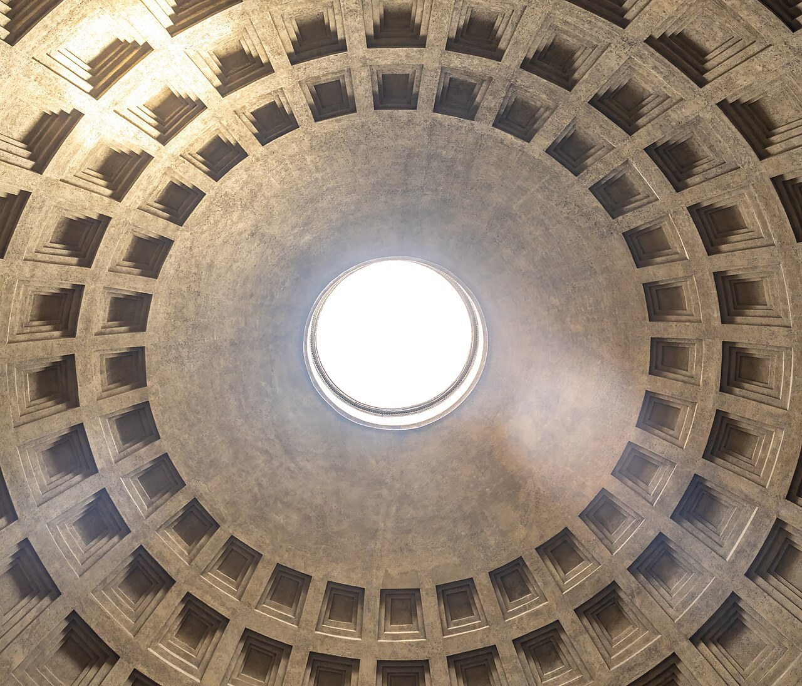

DE L’HERÈNCIA ETRUSCA A HISPÀNIA
Art etrusc
i romà.
Context, arquitectura i arts plàstiques

Edició digital del dossier en valencià. Text complet organitzat per a la lectura en pantalla, amb mapes, imatges i un catàleg final d’obres PAU.
Introducció
Dels set turons a la Roma imperial
Als cims dels set turons que hui formen la ciutat de Roma hi havia, en els seus orígens, a principis del primer mil·lenni aC, uns llogarets pobres desvinculats els uns dels altres. Estes poblacions es van unificar quan, en el segle VI, la constant infiltració de població etrusca al Laci va portar finalment el poble veí, més avançat culturalment i econòmicament, a ocupar el tron romà. Foren tres els reis etruscos que van traslladar a Roma els assoliments de la civilització etrusca: Tarquini Prisc, Servi Tul·li i Tarquini el Superb. Van ser els últims, perquè, després de l’enderrocament d’este darrer, l’any 510 aC, es va proclamar la República.
Els romans van adoptar dels etruscos, en una mesura considerable, l’organització política i social, les tàctiques militars, les pràctiques religioses i endevinatòries, les formes arquitectòniques i els procediments artístics. Així, l’arquitectura dels temples romans deriva, quant a la tipologia, de l’etrusca, encara que emprava materials de més qualitat i prescindia de la profusió decorativa d’esta. D’altra banda, el realisme de l’art romà és, en part, atribuïble als models etruscos pel que fa a la representació de temes quotidians, al gust pel detall o al costum de perpetuar les personalitats individuals per mitjà de l’escultura. Estos van ser, tanmateix, només punts de partida per al desenvolupament i l’esplendor posteriors de l’art romà, que es van produir en l’època imperial, inaugurada l’any 27 abans de la nostra era.
L’expansió al Mediterrani
Territori, societat i religió
1. Etrúria
A la regió italiana compresa entre el Tíber i l’Arno es va establir, a principis del primer mil·lenni aC, un poble d’origen incert, procedent potser de Lídia, a l’Àsia Menor, o sorgit d’una evolució accelerada d’un grup autòcton.
A la zona colonitzada per este poble, que amb el temps es va estendre des de les planes del Po, al nord, fins a la Campània, al sud, es distingien dos àrees per les seues característiques econòmiques i socials. A l’interior, l’activitat productiva predominant era l’agrícola, fet que va afavorir la perpetuació d’una estratificació social molt marcada, encapçalada per una classe aristocràtica més o menys provinciana i molt conservadora. Les poblacions pròximes a la costa, en canvi, es van dedicar al comerç a gran escala al Mediterrani. Això va posar el poble etrusc en contacte directe amb la cultura grega, dominant en aquell primer moment a la conca mediterrània.
Com a resultat de la riquesa obtinguda a través del comerç, en la primera mitat del segle VII van començar a créixer les ciutats etrusques i van sorgir les primeres produccions artístiques amb una personalitat pròpia d’este poble.
La religió etrusca
Abans que la influència grega s’imposara en la seua cultura, els etruscos adoraven déus informes, esperits vagues. Quan van entrar en contacte amb els grecs, van prendre del panteó olímpic alguns dels seus déus, tots associats a Etrúria amb forces naturals a les quals ja es retia culte. D’altra banda, van donar nom a diversos lases o genis funeraris autòctons, com Charun (Caront) i Vanth (geni alat femení). El déu nacional era Velthuna o Veltha, el santuari del qual es trobava a Bolsena.
El culte als avantpassats
Els etruscos de classe alta valoraven moltíssim la pertinença a una família de llinatge noble i antic. Retien honors als avantpassats per mitjà de cerimònies fúnebres amb motiu dels aniversaris de la seua mort, els oferien sacrificis i celebraven banquets en la seua companyia. Era una obligació moral de tot etrusc de bé cuidar les tombes dels seus majors, els quals, a més, sembla que estaven presents a les vivendes palatines en forma d’estàtues de terracota. Però les abundantíssimes tombes excavades en la tova volcànica de la zona no s’expliquen per una creença en la supervivència feliç dels cossos o de les ànimes, perquè la mort era un trànsit molt temut que inaugurava una vida cruel i sense esperança. S’expliquen, en canvi, com a monuments commemoratius, com a record de la grandesa d’una casta i com a punt focal on esta feia residir la seua identitat.
2. Roma
El tarannà del poble romà era molt diferent del de l’etrusc. Un afany expansionista imparable el va portar a dominar, després de lluites prolongades, tota la península Itàlica, inclosa la Magna Grècia, i, a través de la victòria sobre els cartaginesos, a conquistar possessions al nord d’Àfrica i a les costes del Mediterrani occidental. Per a unir estes possessions per via terrestre, es van emprendre campanyes militars que van donar com a resultat el domini de tota la península Ibèrica, les Gàl·lies, Germània, Macedònia i Grècia, així com de totes les costes del Mediterrani oriental, inclòs Egipte. En alguns casos, controlaven estos territoris per mitjà d’estats vassalls.
La utilitat pública
Totes les regions conquistades pels romans van quedar sembrades de carreteres, aqüeductes i arcs triomfals, que testimonien la seua preocupació per les obres públiques. Els arquitectes, que també eren enginyers, van traçar ciutats a tots els racons de l’Imperi segons un pla ideal regit per l’orde i la simetria. No hi faltaven els edificis on es desenvolupava la vida pública romana, en la qual es mesclaven negocis i plaer, estratègia política i entreteniment popular: basílica, temples, teatre, amfiteatre i termes. I, igual que l’àgora havia sigut el centre de la vida ciutadana per als grecs, el fòrum ho va ser per als romans: una gran plaça de reunió present en tota població important.
La religió romana
La religió romana, que en la seua formulació oficial definitiva va ser el resultat d’un sincretisme entre antigues divinitats animistes i alguns dels déus principals de la religió grega, estava en mans dels magistrats i era un assumpte d’estat, íntimament lligat a l’estabilitat del règim. En conseqüència, la fidelitat dels ciutadans a les institucions estatals es demostrava, en bona part, a través del culte públic als déus nacionals.
La casta sacerdotal romana era nombrosa: les vestals, els pontífexs, els àugurs, els harúspexs i els duumvirs prestaven la seua assistència en una gran quantitat de ritus públics. La religió privada girava al voltant del culte als lars (genis protectors de les cases i els camps) i als manes (els morts), cultes derivats de la gran inclinació dels romans a les possessions terrenals i a les tradicions familiars.
Síntesi i originalitat de l’art romà
L’herència etrusca i el caràcter estatal
1. L’herència dels etruscos
El temple etrusc
El temple etrusc devia tindre una entitat arquitectònica escassa: era més prompte un gran suport per a l’abundantíssima decoració escultòrica, que li conferia un caràcter especial. Enfront de l’escultura monumental grega, subordinada a les formes arquitectòniques i harmonitzada amb estes, la decoració dels temples etruscos és excessiva i anticlàssica.
L’únic artista etrusc de nom conegut: Vulca
Prenem com a exemple el temple anomenat «de Portonaccio», dedicat cap a l’any 500 aC, a Veïs, a Menerva, deessa que s’hi venerava al costat d’Apulu. De la construcció en sabem poc, perquè el caràcter perible dels materials en va comportar la desaparició total. Tanmateix, la decoració escultòrica, realitzada en terracota, tècnica en la qual van excel·lir els artistes etruscos, ha sobreviscut.
A Veïs s’han trobat antefixes amb caps terribles de gorgones, que es van col·locar, com era costum, a les vores de la coberta de teules a dos aiguavessos. També es van revestir els frisos amb plaques de terracota i se’n va situar una altra, més gran, al vèrtex del front de la teulada. Però el més destacable eren les quatre grans figures de terracota que es van col·locar sobre el columen o biga principal de la teulada.
L’autor d’estes escultures va ser, quasi amb seguretat, un tal Vulca, escultor famosíssim que també va ser requerit per a realitzar una estàtua de Júpiter i una quadriga monumental per al temple del Capitoli, a Roma, durant els anys de dominació etrusca. Al temple de Veïs, Vulca va disposar un grup de quatre figures policromades: un Apulu, un Hercle (Hèracles) amb una cérvola, un Hermes (del qual només queda el cap) i una figura femenina, potser Latona, amb un xiquet als braços. Són les úniques estàtues de grans dimensions de déus etruscos que s’han conservat, perquè la resta de l’estatuària major, molt escassa, és funerària.
Les tombes i els seus residents
Més estàtiques són les escultures de caràcter funerari, que van des dels primers vasos canopis, recipients o urnes amb una tapa en forma de cap humà, fins als sarcòfags amb parelles reclinades al damunt. Segurament, els etruscos van adoptar dels egipcis el soterrament en sarcòfags, però la col·locació d’un grup escultòric sobre estos va ser absolutament original.
Arquitectònicament, la tomba reproduïx l’estructura de la casa, que prefigura el tipus itàlic: un atri o espai central, un tablinum o habitació principal al fons i estances al voltant d’estos. A les més riques es van esculpir pilars, llindes, motlures, llits i altres mobles, i fins i tot objectes fingits a les parets, com a la Tomba dels Relleus, a Cerveteri, tot policromat.
Als sepulcres es disposaven, sobre lleixes o en terra, els objectes de l’aixovar funerari, que incloïa ceràmiques gregues i xicotetes obres en bronze de gran valor artístic, així com objectes de tocador i treballs d’orfebreria impressionants, de gust orientalitzant.
La pintura mural
Només gràcies als sepulcres aristocràtics de Tarquínia (on es concentra el huitanta per cent de les tombes pintades) coneixem la pintura mural etrusca, que també s’aplicava a gran escala a les vivendes i als temples. La decoració pictòrica satisfeia, d’una banda, el gust dels nobles etruscos per la sumptuositat i el colorisme; de l’altra, servia a un propòsit ritual.
Prompte, tanmateix, s’hi introduïxen escenes figurades de caràcter mitològic (inspirades en la ceràmica grega) o festiu (s’hi representa el grup familiar celebrant un banquet, envoltat de músics, servidors, atletes que mostren la seua destresa o atraccions circenses). Malgrat les aparences, no es tracta de motius completament jovials i optimistes, perquè les pintures mostren el banquet funerari en el qual els familiars s’acomiaden del difunt. Hi apareixen figures inquietants, com misteriosos àugurs, esperits i divinitats infernals d’aspecte amenaçador, en escenes d’interpretació difícil, o fins i tot eròtiques, probablement relacionables amb els ritus agrícoles de fecunditat.
2. El caràcter estatal de l’art romà
La cultura grega havia suposat una ruptura parcial amb la tradició prehistòrica i la de les primeres civilitzacions de l’antiguitat, ja que, en un moment determinat del seu desenvolupament, entre els segles V i IV aC, l’art va deixar de ser, de manera exclusiva, un instrument de la vida religiosa.
La cultura romana va aprofundir en la bretxa oberta per la grega en supeditar la producció artística als interessos de l’Estat o dels seus governants i desvincular-la quasi per complet del món de la religió, perquè fins i tot quan es construïen temples i es tallaven imatges de déus la finalitat era política. A Grècia, la polis havia sigut la destinatària d’una part important del treball dels artistes, però, dins o fora d’esta, el santuari la superava en este sentit. A Roma, la ciutat, la urbs, va centralitzar totes les activitats. Per tant, l’art romà era «polític», estatal i urbà, però no totalment uniforme: el seu consum es va difondre tant entre les classes nobles com entre les populars. Així es va crear un doble corrent: un art culte hel·lenitzat, dominant, i un art popular més rude i realista, que s’entrecreuen en determinats moments.
Una arquitectura d’utilitat pública
Materials, ciutat i tipologies
Tècniques i materials
Els romans van ser constructors notables i, encara que van adoptar molts elements dels grecs i dels etruscos, també van mostrar un estil propi. Van incrementar l’ús de l’arc, van difondre la volta i van inventar la cúpula. Com a materials de construcció van emprar molt la rajola de fang cuit (opus latericium), la pedra en carreus ben disposats (opus quadratum) i el formigó (opus caementicium). Este últim, elaborat amb una mescla de calç i una roca volcànica molta, la putzolana, va permetre dur a terme grans projectes. L’estructura d’arcs es va utilitzar primer en ponts, aqüeductes i altres construccions utilitàries. Els ordes arquitectònics, resultat de la unió de la columna i l’arquitrau, es van emprar per a edificis religiosos. També es van combinar arcades i columnates: les primeres com a sistema constructiu i les segones com a ornament.
La ciutat i els seus edificis
Roma va desenvolupar un model urbanístic i uns tipus d’edificis que es van repetir per tot l’Imperi.
La ciutat romana estava delimitada per una muralla i seguia l’esquema d’ordenació del campament; és a dir, el traçat es basava en dos grans carrers que, a manera d’eixos, es tallaven al centre i donaven lloc a quatre zones o barris. A l’encreuament d’estes dos vies principals, el cardo (eix N-S) i el decumanus (eix E-O), es trobava el fòrum.
El fòrum era una plaça porticada on tenien lloc activitats comunitàries de la vida comercial, política i religiosa, i al voltant de la qual s’alçaven edificis públics.
El temple se situava sobre un podi, com l’etrusc, amb un pòrtic columnat (pronaos) al qual s’accedia per una escalinata. Això assenyalava la importància de la façana frontal. Tenia, a més, un espai principal (cella) dividit per fileres de columnes.
La basílica servia com a mercat, banc, borsa i sala de justícia. Generalment tenia una planta longitudinal, un nombre imparell de naus i una capçalera que la rematava.
Les termes o banys públics tenien una piscina freda (frigidarium), una piscina calenta (caldarium), un vestidor (apodyterium) i altres instal·lacions per a practicar esports, jugar o mantindre relacions socials. Les termes de Caracal·la, a Roma (216 dC), proven la importància d’esta construcció.
Teatres, circs i amfiteatres
Els romans van crear edificis per als espectacles públics: el teatre, l’amfiteatre i el circ.
El teatre va adoptar els elements del teatre grec: l’espai per als espectadors (cavea), que era un hemicicle concèntric; l’espai per al cor (orchestra), que era un semicercle, a diferència del grec, que era un cercle complet; i l’espai per a la representació (escena), allargat i limitat darrere per un mur del qual penjaven els decorats.
L’amfiteatre era una altra construcció destinada a l’oci. S’hi celebraven exhibicions i jocs de tota classe, entre els quals les lluites de gladiadors eren les que més entusiasmaven el públic.
Tenia forma ovalada i els seus elements eren l’arena i les grades (cavea), a les quals s’accedia per escales i anells de distribució.
El circ, basat en l’hipòdrom grec, estava destinat a l’esport més popular entre els romans: les carreres de cavalls.
Els recintes per a espectacles més grans i luxosos es trobaven a Roma: el teatre de Marcel, l’amfiteatre Flavi i el circ Màxim. Però també n’hi havia bons exemples a les províncies: Mèrida, Sagunt, Itàlica o Segòbriga en donen mostra a Espanya.
Les obres públiques
La civilització romana també va donar una gran importància a la xarxa viària i a les instal·lacions d’abastiment públic. Les calçades, els ponts i els aqüeductes en són una mostra.
A més dels edificis públics i de les obres públiques, hi ha un altre grup de construccions per les quals Roma també va mostrar interés: els monuments commemoratius, com l’arc de triomf i la columna.
L’arc de triomf i la columna s’alçaven per a celebrar una victòria o un altre fet rellevant. Estos monuments van ser el suport en què els romans van donar compte d’ells mateixos i van crear així el relleu històric, com veurem més avant.
Les residències privades
Finalment queden els edificis privats, situats a la ciutat o al camp. Hi destaquen la casa d’atri, les cases de veïnat, la vil·la rural i la vil·la suburbana.
La casa d’atri era una vivenda urbana per a un únic propietari. Les habitacions es disposaven al voltant d’un atri que tenia els aiguavessos de les cobertes inclinats cap a dins per a conduir l’aigua de pluja fins a l’estany (compluvium) del sòl. Entre les habitacions destacava la sala de recepció (triclinium), situada en un dels costats menors de l’atri i comunicada també amb el jardí. Este es trobava a la part posterior i estava envoltat de columnes (peristil).
Les cases de veïnat (insulae) solien ser de lloguer i eren el resultat de l’especulació del sòl i de la formació d’un proletariat urbà. Tenien diversos pisos i un pati de llums substituïa l’atri.
La vil·la rural era el centre d’una explotació agrícola o ramadera. Encara que les ciutats van ser els centres principals on es va desenvolupar la vida romana, la vil·la rural va tindre una importància considerable: la consolidació de les conquistes militars es va organitzar a través del repartiment de terres entre els comandaments i els soldats que explotaven per a Roma les riqueses de la conca del Mediterrani. La forma i les dimensions de la vil·la depenien del volum i del tipus de producció, així com del paisatge on es trobava.
La vil·la suburbana, situada als afores de la ciutat, obeïx sobretot a una moda aristocràtica. Horaci i Virgili havien cantat els plaers de la vida campestre, a la qual les classes benestants s’havien llançat amb entusiasme. Un dels tipus de vil·la suburbana és la vil·la de pòrtic, formada per un edifici rectangular precedit de pòrtics i flanquejat per dos pavellons eixints. La vil·la Adriana, construïda per l’emperador Adrià a Tívoli, prop de Roma; la Domus Aurea de Neró, de dimensions i sumptuositat asiàtiques; les més modestes Domus Flavia i Domus Augustana; la vil·la de Tiberi a Capri, o el palau fortificat de Dioclecià a Spalato en són alguns exemples.
Escultura i pintura. Un extraordinari «mobiliari urbà»
El retrat, les efígies imperials i l’evolució de l’estatuària
A la riquesa arquitectònica de Roma se sumava l’esplendor de les obres escultòriques i pictòriques que es repartien per tots els racons de la ciutat. En la seua Història natural, Plini el Vell, que va viure en el segle I de la nostra era, fa múltiples referències a esta passió dels romans per les estàtues, que es manifestava sobretot als espais públics, però també als privats, als atris i als jardins de les cases particulars.
Sabem que els temples romans estaven envoltats d’estàtues i que, a les parts altes, es penjaven escuts amb retrats. Les pintures gregues, d’altra banda, s’exposaven als temples i al fòrum, i en diverses places s’alçaven obeliscs traslladats laboriosament des d’Egipte. Les funcions públiques de la pintura, a més, eren variades: citarem només dos exemples d’utilització propagandística proporcionats per Plini. Escipió l’Africà va situar al Capitoli un gran quadre que representava la seua victòria sobre els selèucides, i un general de les guerres púniques va explicar al fòrum les seues estratègies militars davant d’una pintura amb el plànol de la ciutat.
Fins ara hem destacat la influència de la civilització grega en la cultura i les produccions artístiques romanes. Seria erroni considerar, tanmateix, l’art romà com una mera imitació del grec. Si bé és evident una certa continuïtat entre les formes, i fins i tot entre les idees gregues i romanes, cal constatar una diferència fonamental de caràcter. A Roma, les formes gregues, reelaborades, s’adapten a uns continguts ben diferents.
El retrat particular
El sistema religiós romà, amb la seua mescla de religió estatal i culte als avantpassats, va tindre conseqüències artístiques transcendents. Ja en època republicana era costum extraure màscares de cera dels rostres dels difunts, que es guardaven en un armari a l’atri de la vivenda familiar, present en totes les cases d’un cert llinatge. Les màscares, que presidien les cerimònies fúnebres, es conservaven com a memòria de la dignitat d’una família.
En relació amb este caràcter de les imatges com a recordatori dels fets honrosos d’un ciutadà, cal esmentar una llei, el ius imaginum, promulgada, segons sembla, en els primers temps de Roma. Esta prohibia que es feren retratar aquells que no hagueren exercit càrrecs públics.
D’això deriva una clara diferenciació entre l’estatuària laica grega i la romana: a Grècia tenien dret a immortalitzar-se en pedra els atletes semidivins vencedors en els jocs religiosos; a Roma, els funcionaris que hagueren demostrat la seua vàlua al servici de l’Estat.
Peculiaritats i evolució de l’estatuària romana
Les tendències estilístiques del retrat romà les van marcar, com era d’esperar, a través d’un mecanisme d’emulació, les efígies dels emperadors, que eren més que simples retrats. Es portaven a tots els racons de l’Imperi per a estimular la fidelitat dels súbdits i difondre així, geogràficament, estils i modes. A les zones més intensament romanitzades es contemplaven, especialment en els primers temps, com a divinitats a les quals es retia culte.
És molt possible que esta consideració de les estàtues com a imatges divines decaiguera prompte, però va continuar formant part de la religió oficial romana. Les classes cultes, en qualsevol cas, imitaven en els seus retrats els dels emperadors i s’adherien al corrent hel·lenitzant que estos van sostindre fins a la crisi cultural que va marcar l’inici del Baix Imperi. Com ja s’ha apuntat, esta tendència es manifestava a través de la inspiració en els models grecs i, en conseqüència, d’una idealització considerable dels trets facials, que, no obstant això, continuaven sent recognoscibles. Convivia amb una altra de més popular o, en moments en què es reivindicava el passat republicà com a encarnació de les austeres virtuts romanes, més tradicionalista, en la qual l’afany realista es va portar, de vegades, als extrems.
El decòrum romà va marcar una altra de les diferències respecte de les representacions escultòriques gregues: mentre que els grecs van preferir, ja des de l’arcaisme, el nu per a les figures masculines en un primer moment i també per a les femenines en el període hel·lenístic, a les estàtues i als relleus romans, especialment als retrats, les anatomies quedaven sempre o quasi sempre convenientment cobertes amb vestits. Des dels temps d’August, els emperadors es representaven amb armadures de guerra, en el seu paper de conquistadors i caps militars; amb túniques i togues, coberts fins al cap, quan assumien el de pontífex màxim, summe sacerdot de tots els cultes; o amb un mantell que deixava al descobert bona part del cos quan eren ells mateixos els divinitzats.
En època de Juli Cèsar, durant els últims anys de la República, i seguint la tradició hel·lenística, els retrats atenien més l’expressió d’un tarannà, un ethos, el de conquistador diví i compendi de totes les virtuts d’un governant, que la representació dels trets individuals. Els emperadors de la família Júlia van seguir el model marcat pel filogrec August, inspirat en l’escultura del període clàssic grec.
Amb Claudi i Neró es van començar a valorar els efectes pictòrics de llums i ombres, absents a les superfícies llises que s’havien emprat abans.
Esta tendència es va intensificar amb les dinasties que es van rellevar posteriorment en el poder: els Flavis, els Antonins i els Severs, més realistes. Els seus artistes, a més, van mostrar una preocupació per l’expressió dels caràcters, encara que foren, fins a un cert punt, probablement estereotipats.
Un dels Antonins, Marc Aureli, l’«emperador filòsof», va ser retratat en una escultura eqüestre en bronze, l’única conservada de les moltes que, segons Plini, hi havia a Roma. Miquel Àngel la va situar a la seua plaça del Campidoglio.
En el segle III, amb l’emergència dels antics corrents populars, el retrat es va orientar cap a una simplificació geomètrica progressiva. El grup dels tetrarques, de l’època de Dioclecià, i, sobretot, els retrats de Constantí són el punt d’arribada d’esta tendència. La semblança física va deixar de ser l’objectiu perseguit pels escultors, que van tendir, potser per influència egípcia, a la formulació d’un tipus hieràtic, més expressiu i simbòlic que realista. Un model molt allunyat del classicisme grec més pur i prou pròxim a l’estètica medieval.
El relleu històric
Imatges, poder i memòria
El caràcter propagandístic de l’art romà s’expressa amb més claredat en el gènere escultòric del relleu narratiu.
Arcs triomfals, frisos arquitectònics, columnes i monuments de naturalesa diversa es van decorar, a partir del regnat d’August, amb escenes en les quals, a semblança dels relleus egipcis i mesopotàmics, els emperadors donaven a conéixer a la ciutadania, exclusivament a través de les imatges, les seues virtuts militars, polítiques o religioses. Esta glorificació dels governants a través del relleu escultòric no era, per tant, totalment nova, però sí que ho era el tractament, en diversos sentits.
En primer lloc, la representació de les gestes es va tenyir de l’afany de realisme que va caracteritzar l’art romà. Així, les escenes incorporaven múltiples retrats, tipus racials i vestimentes regionals, o paisatges naturals i arquitectònics identificables. El governant ja no és un déu ni un Teseu o un Hèrcules, i les guerres ja no es transformen, en la narració escultòrica, en gigantomàquies o centauromàquies. Els enemics són ben reals i els camps de batalla no són mítics, sinó ben coneguts pels romans, alguns dels quals hi havien lluitat.
D’altra banda, prompte va sorgir una inquietud per la ficció de l’espai en profunditat que va donar lloc a troballes tècniques interessants. Finalment, es va adoptar la narració continuada dels esdeveniments, i els conjunts escultòrics es van convertir en cròniques detallades de les campanyes.
Els exemples més destacats de relleus narratius són l’Ara Pacis Augustae, l’arc de Titus i les columnes de Trajà i Marc Aureli.
L’Ara Pacis Augustae
L’any 13 aC, el Senat va manar construir l’Ara Pacis Augustae, un altar on «els magistrats, els sacerdots i les verges vestals feren un sacrifici anual» per a commemorar la pau que l’emperador August havia aconseguit imposar als dominis occidentals de l’Imperi.
L’altar se situava dins d’un recinte xicotet, elevat sobre un pedestal i delimitat per un mur, on es van instal·lar plaques de marbre sobre les quals es va tallar el primer relleu narratiu de què tenim notícia.
En este monument, construït en una època de forta influència hel·lenitzant, no s’han eliminat per complet les figures mitològiques. Així, hi apareix Eneas, pare de Iulus-Ascani, del qual descendia la gens Iulia a què pertanyia August, realitzant un sacrifici, al costat d’una representació de la deessa Ceres i del déu Mart al costat de la lloba que alletava Ròmul i Rem. Però, entre les figures de la processó, en actituds dignes i pausades, es reconeixen els retrats d’August, com a pontífex màxim, i de diversos membres de la seua família, així com dels seus dignataris. Davall d’estos, a la zona inferior al fris, es van esculpir multitud de formes vegetals i florals d’una delicadesa sense parangó en l’art romà. Representen els fruits de l’edat d’or que, segons el programa oficial secundat pels poetes, havia inaugurat August.
L’arc de Titus
L’exemple següent de relleu històric el constituïxen els relleus que adornen l’arc que donava entrada al fòrum per l’est, anomenat de Titus, encara que el va construir el seu successor, Domicià. Durant el breu regnat de Titus, de només tres anys, del 79 al 81, es va produir l’erupció del Vesuvi, que va destruir Pompeia i Herculà. A més, Roma, assotada per la pesta, va patir un incendi important. Pel que fa a l’embelliment de la ciutat, es va acabar el Colosseu i es van construir unes termes que també porten el seu nom.
Titus va ser, fonamentalment, un militar que va participar amb son pare, Vespasià, en les guerres de Germània i de Britània, i que va prendre amb ell Jerusalem. Així, com a general invicte, apareix als panells escultòrics del seu arc, situats al fris (entrada de Titus a Jerusalem l’any 70 dC), als carcanyols de l’arc (unes victòries alades), a l’interior (entrada triomfal de l’emperador a Roma i, davant d’ell, desfilada dels soldats amb el botí) i a l’intradós (ascensió al cel, sobre una àguila, de Titus, que ja havia mort quan es va erigir l’arc). La història s’entrellaça ací amb l’al·legoria.
Quant al tractament escultòric, cal destacar la perícia tècnica i els avanços en la representació de l’espai dels escultors que van treballar a l’arc. A l’arc de Titus es marquen quatre plans de profunditat, prou ben resolts, i es creen contrastos intensos de llum. Encara més reeixits serien, pel que fa a la ficció de la visió en perspectiva, els relleus de Trajà i de Marc Aureli que Constantí va aprofitar al seu arc triomfal.
La columna de Trajà
El monument romà més important, pel que fa a la decoració en relleu, és la columna de Trajà, que es va situar a la plaça que precedia el temple dedicat a l’emperador, al costat de la basílica Úlpia i entre les biblioteques grega i llatina. A la base d’esta columna, en una urna d’or, es van depositar les cendres de Trajà; per això, cal considerar-la, en certa manera, un monument funerari i commemoratiu. Hui corona la columna una estàtua de sant Pere, però, en origen, era el mateix Trajà qui contemplava la Ciutat Eterna des del cim.
Els relleus es disposen en un fris en espiral que recorre tota l’altura de la columna, a imitació de les bandes que envoltaven les columnes dels temples durant les celebracions religioses o, potser, dels rotllos de papir il·lustrats.
A la columna es representen les dos campanyes que Trajà va dur a terme entre els anys 101 i 107 contra els dacis, poble establit al nord del Danubi, com a part d’una política imperialista agressiva que el va portar a conquistar, a més, per a Roma, les que des d’aleshores serien les províncies d’Aràbia, Armènia, Assíria i Mesopotàmia. Amb una profunditat real molt escassa, de dos centímetres com a màxim, s’aconseguix un cert efecte de fuga en representar el paisatge a vista d’ocell i els fons gravant-los lleugerament en la pedra. Per a reforçar la impressió de relleu, a més, es va enfonsar el contorn de les figures amb un solc.
Sobre la prodigiosa capacitat descriptiva i narrativa del conjunt, s’ha dit que Apol·lodor de Damasc, arquitecte de Trajà, el va acompanyar en les campanyes representades a la columna. Això li hauria permés observar tota la varietat d’escenaris i de tipus humans que hi queden reflectits, així com presenciar els preparatius bèl·lics i les lluites que s’hi escenifiquen, en les quals Trajà apareix retratat prop de seixanta vegades.
La columna de Marc Aureli
Marc Aureli, l’autor estoic dels Soliloquis al qual ja hem fet referència a propòsit de la seua estàtua eqüestre, només succeir com a emperador son pare adoptiu, Antoní Pius, que al seu torn havia succeït Adrià, es va trobar amb una sèrie de revoltes, tant al Pròxim Orient com a la zona del Danubi. Estes el van portar a assumir de nou, probablement a pesar seu, el paper de gran militar victoriós.
Com a commemoració dels seus triomfs contra els marcomans, l’any 196 es va erigir una columna que seguia molt de prop el model de la de Trajà. Però, malgrat esta semblança aparent, s’hi perceben diferències molt significatives. Les referències paisatgístiques són més succintes, amb un fons neutre en alguns trams del relleu, que guanya volum i crea efectes rics de llum i ombra. La narració és monòtona i es presta més atenció a l’expressió que a la descripció, centrada fonamentalment en la duresa del combat i les seues conseqüències, a l’estil oriental. En definitiva, a la columna de Marc Aureli es constata com l’art romà es va apartant, des de finals del segle II, del model classicista grec: en part, per una transformació espiritual progressiva i una pèrdua de confiança en els valors clàssics; i, en part, per la inseguretat derivada de l’amenaça que suposava l’empenta dels pobles bàrbars sobre els limes.
Mosaics i pintures
La decoració dels interiors
Disposem de prou testimonis literaris i arqueològics per a afirmar que als romans els agradava decorar profusament els interiors domèstics. Els sòls, especialment als vestíbuls i als atris, encara que també sovint a les habitacions, es revestien de mosaics fets amb xicotetes tessel·les de marbre, pedra, taulell o vidre acolorit, de vegades en blanc i negre i d’altres en colors, amb una intenció naturalista. En alguns casos eren geomètrics o tenien figures senzilles, sovint només els contorns, executats amb tessel·les més o menys grans (opus tessellatum). En altres casos formaven composicions figurades molt detallades i empraven fragments de colors minúsculs per a imitar l’efecte d’una pintura (opus vermiculatum).
Als sòls es representaven escenes mitològiques (les més freqüents), religioses (relacionades amb els cultes mistèrics), cinegètiques, costumistes o burlesques.
Les parets, construïdes generalment amb materials pobres, es revestien de plaques de marbre, d’estucs amb relleus o, més sovint, de pintures. Com en l’escultura, el model per a la pintura romana era Grècia. Es copiaven composicions famoses d’artistes grecs, però els romans van crear, per mitjà de les decoracions pictòriques, uns jocs de simulació espacial molt interessants que els grecs, pel que sabem, no van conéixer.
En un primer moment, les pintures s’aplicaven a les parets per a recrear elements d’arquitectura decorativa, com sòcols, llindes, columnetes, etc. A partir d’ací, les simulacions van anar guanyant terreny: primer, en marcs on s’incloïen els «quadres», que no eren pròpiament quadres sinó frescos; després, obrint «finestres» des de les quals s’observaven paisatges i figures; i, finalment, creant vistes arquitectòniques atapeïdes, plenes de templets i columnes, que es combinaven amb representacions figurades.
L’art romà a Hispània
Romanització, obres públiques i arts plàstiques
1. La romanització
Les guerres contra Cartago van portar els romans a les costes orientals de la península Ibèrica, d’on van aconseguir expulsar els cartaginesos l’any 206 aC. Alguns dels pobles establits des d’antic al territori peninsular, com es va veure en el tema 7, es van resistir aferrissadament a la dominació romana. Entre setges, alçaments i pacificacions, la conquista es va poder donar per acabada l’any 19 aC, quan Cèsar i August van prendre els últims enclavaments càntabres.
A partir d’aleshores, de manera programada des de la capital de l’Imperi, es va procedir a la romanització de les províncies hispanes. Esta va començar amb la fundació de ciutats de nova planta o amb la remodelació de poblacions preexistents. Per primera vegada en la història d’Espanya, la cultura predominant era urbana, cosa que no impedia que, com hem apuntat abans, es desenvolupara una activitat econòmica considerable a les vil·les, dependents de les ciutats en major o menor grau.
2. Les obres públiques a Hispània
Amb la romanització es dispara la producció artística al nostre país i, sobretot, es produïx una intensificació de l’activitat edilícia sense precedents. A més de les vies, de les quals queden restes en moltíssims llocs de la nostra geografia, els governants van manar construir aqüeductes (com el de Segòvia), arcs (com el de Medinaceli), muralles i, a l’interior de les poblacions, com era habitual a totes les ciutats de l’Imperi, fòrums, basíliques, termes, temples, teatres i amfiteatres (com els de Mèrida). En general, l’arquitectura romana a Hispània es caracteritza per la sobrietat constructiva i decorativa i pel tradicionalisme.
3. Les arts plàstiques
En les arts plàstiques, que depenien menys dels programes oficials, es poden distingir dos corrents: un de culte o estatal, que seguix els models de la capital, importa obres i convida artistes a desplaçar-se fins al lloc on es realitza el treball; i un altre de popular o provincial, més vinculat a les tradicions vernacles, que preferix un estil de línies més simplificades i tendix cap a la narrativitat i el simbolisme. Cal suposar que a totes les ciutats importants hi havia tallers locals per a atendre la demanda considerable. Finalment, cal dir que, encara que a Espanya queda molt poca pintura d’època romana, sí que hi ha una gran quantitat de mosaics, alguns d’admirables.
Les obres, en detall.
Tretze comentaris PAU amb identificació, anàlisi formal, interpretació, context i relacions.
Les fotografies s’amplien en clicar-les. El títol de cada obra desplega el comentari i les vistes complementàries.
Les obres PAU
Arquitectura · enginyeria · escultura13 obres disponibles
01Maison Carrée de NîmesComençament del segle I dCArquitecturaFaçana principal: escalinata, pòrtic de sis columnes corínties i frontó.
Autoria desconeguda · promoció augustal
Nimes, França
Vistes complementàries
01Identificació i classificació
Temple romà d’època d’August, situat al fòrum de l’antiga Nemausus. És hexàstil, pseudoperípter i corinti. Fou dedicat a Gai i Luci Cèsar, nets i hereus adoptius d’August. La dedicació permet interpretar-lo dins del culte dinàstic imperial.
02Materials i anàlisi formal
La pedra tallada construïx un volum rectangular sobre un podi alt amb escalinata frontal. El pòrtic profund té sis columnes a la façana; als laterals i al darrere, les columnes s’adossen al mur de la cel·la. Esta pseudoperístasi conserva l’aparença grega d’una columnata sense oferir un deambulatori complet. Capitells d’acant, entaulament i frontó definixen el llenguatge corinti. L’accés únic i la façana dominant imposen una visió axial.
03Funció i significat
L’edifici vincula pràctica religiosa i adhesió a la família imperial. El seu emplaçament al fòrum fa visible el poder de Roma en la vida quotidiana de la comunitat. La magnificència del llenguatge grec reforça el prestigi dels dedicataris.
04Context historicoartístic
Després de les guerres civils, August consolida el Principat i promou una renovació monumental. Les ciutats provincials adopten formes urbanes i representacions que les integren en l’Imperi, sovint amb la participació de les elits locals.
05Models, influències i conclusió PAU
Combina l’ordre i el repertori grec amb el podi, la frontalitat i el pòrtic de la tradició itàlica. En comparació amb el Partenó, la diferència decisiva és l’accés i la relació amb l’espai: la Maison Carrée prioritza un front i un recorregut axial. La seua conservació ajuda a entendre la recuperació del temple antic en el neoclassicisme. Sintetitza arquitectura clàssica i representació política provincial.
Elements visuals destacats
- Podi i escala frontal
- Sis columnes al pòrtic
- Columnes adossades a la cel·la
Font de consulta: UNESCO ↗ · Enllaç a esta obra
02Panteó de RomaCap al 118–125 dC · fase adrianeaArquitecturaFaçana i pòrtic del Panteó de Roma.
Autoria discutida · promoció d’Adrià
Roma, Itàlia
Vistes complementàries
01Identificació i classificació
Edifici religiós de l’Alt Imperi, reconstruït sota Adrià sobre precedents d’Agripa. La inscripció del pòrtic recorda Agripa, però no data la construcció actual. La combinació de pòrtic clàssic i rotonda cupulada fa del conjunt una obra fonamental de l’espai interior romà.
02Materials i anàlisi formal
El pòrtic octàstil presenta columnes de granit amb capitells corintis i frontó. Un cos de transició l’unix amb la rotonda, de murs molt gruixuts que integren nínxols i estructures de descàrrega. El formigó romà permet cobrir-la amb una cúpula hemisfèrica: la reducció del gruix i l’ús d’àrids més lleugers cap a dalt disminuïxen el pes. Cassetons i òcul organitzen la superfície. L’alçada interior fins a l’òcul i el diàmetre de la sala són aproximadament iguals: l’espai suggerix una esfera inscrita.
03Funció i significat
Tradicionalment s’interpreta com un santuari vinculat al conjunt dels déus i a la representació imperial; els usos rituals exactes continuen sent discutits. La llum mòbil de l’òcul connecta arquitectura, temps i cel. La composició permet llegir una imatge d’ordre universal, sense confondre esta interpretació amb una certesa documental sobre tots els seus usos.
04Context historicoartístic
La Roma d’Adrià reunix recursos, tècnica constructiva i tradicions culturals de l’Imperi. L’interés pel món grec conviu amb l’experimentació romana en voltes i grans interiors.
05Models, influències i conclusió PAU
El front clàssic introduïx una experiència interior que supera la funció habitual del pòrtic de temple. La conversió en església afavorí la conservació. La rotonda esdevingué un referent per a cúpules renaixentistes i edificis institucionals. La idea central és la transformació de la massa estructural en un espai unitari governat per geometria i llum.
Elements visuals destacats
- Òcul central
- Cassetons de la cúpula
- Contrast entre pòrtic i rotonda
Font de consulta: Panteó · història del monument ↗ · Enllaç a esta obra
03Teatre romà de MèridaInauguració: 16–15 aC · reformes posteriorsArquitecturaVista de l’orquestra i del front escènic del teatre de Mèrida.
Autoria desconeguda · promotor Marc Agripa
Mèrida, antiga Augusta Emerita
Vistes complementàries
01Identificació i classificació
Edifici públic d’espectacles inaugurat en època d’August sota el patrocini d’Agripa. Pertany a l’arquitectura teatral romana d’Hispània. Cal distingir la fundació del conjunt de les reformes imperials del front escènic conservat.
02Materials i anàlisi formal
La graderia semicircular o càvea s’adapta parcialment al vessant i es completa amb construccions de suport i circulació. S’organitza en ima, media i summa cavea, amb sectors i passadissos. L’orquestra semicircular, el pulpitum i el gran mur escènic definixen una escena tancada. La scaenae frons presenta dos nivells de columnes de marbre i estàtues entre portes i nínxols. Pedres locals, formigó i revestiments nobles combinen estructura i aparença monumental. Accessos i galeries distribuïxen el públic.
03Funció i significat
Acollia representacions teatrals i projectava una imatge de vida cívica romana. La distribució dels seients feia visible la jerarquia social; l’ornamentació i les imatges del poder afavorien la presència simbòlica de l’emperador. El lleure formava part de la integració política de la colònia.
04Context historicoartístic
Augusta Emerita fou fundada en el procés d’organització d’Hispània sota August. La monumentalització de la ciutat, capital provincial, materialitzà la romanització mitjançant infraestructures, espais públics i espectacles.
05Models, influències i conclusió PAU
En comparació amb Epidaure, l’edifici romà reforça la façana escènica, reduïx l’orquestra i articula un recinte més tancat, encara que ací també aprofita el terreny. La reutilització contemporània per a representacions mostra la continuïtat i la transformació del patrimoni. És una síntesi de funció escènica, organització social i imatge imperial.
Elements visuals destacats
- Càvea en sectors
- Orquestra semicircular
- Doble columnata de la scaenae frons
Font de consulta: Consorci de la Ciutat Monumental de Mèrida ↗ · Enllaç a esta obra
04Coliseu de RomaCap al 70/72–80 dC · ampliacions de DomiciàArquitecturaExterior del Coliseu: arcades i ordres superposats.
Tallers imperials · dinastia Flàvia
Roma, Itàlia
Vistes complementàries
01Identificació i classificació
L’Amfiteatre Flavi és un edifici públic d’espectacles iniciat per Vespasià, inaugurat per Titus i completat en diversos aspectes per Domicià. L’autoria personal és desconeguda. La seua planta el·líptica el diferencia del teatre semicircular.
02Materials i anàlisi formal
Pilars i arcs de travertí, murs de tova i estructures de formigó amb rajola formen una xarxa de galeries anulars, corredors radials i escales. La combinació d’arcs i voltes sosté la càvea i facilita la circulació massiva. La façana superposa tres nivells d’arcades amb semicolumnes d’ordres dòric o toscà, jònic i corinti; l’àtic superior es ritma amb pilastres. Els ordres aporten articulació visual més que suport principal. L’arena cobria estructures de servei subterrànies, especialment desenvolupades sota Domicià. Un velarium protegia part del públic.
03Funció i significat
Acollia combats de gladiadors, caceres d’animals i altres espectacles. Els seients segons rang social convertien l’edifici en una representació ordenada de la societat. La donació d’un gran espai públic legitimava la dinastia i associava l’emperador a la generositat envers la població.
04Context historicoartístic
Després de la crisi del 68–69 dC, els Flavis consolidaren el poder. Construir sobre l’espai ocupat pel llac de la residència de Neró podia presentar-se com una restitució a la ciutat d’un lloc abans vinculat al luxe del príncep.
05Models, influències i conclusió PAU
La tipologia de l’amfiteatre és específicament romana. L’eficàcia dels accessos i la repetició modular permeten comparar-lo amb estadis actuals sense establir una identitat de funcions. La superposició d’ordres influí en façanes posteriors. L’obra integra enginyeria, gestió de multituds i representació del poder.
Elements visuals destacats
- Planta el·líptica
- Arcades i ordres superposats
- Galeries, arena i hipogeu
Font de consulta: Regió del Laci · història del Coliseu ↗ · Enllaç a esta obra
05Basílica de Maxenci i Constantí308–312 dC · acabaments i canvis sota ConstantíArquitecturaRestes de la basílica: grans voltes de canó amb cassetons.
Tallers imperials · Maxenci i Constantí
Turó de la Vèlia, Roma
Vistes complementàries
01Identificació i classificació
Basílica civil de l’antiguitat tardana, iniciada per Maxenci i acabada amb modificacions sota Constantí. S’alça prop de la Via Sacra i del Fòrum Romà. El terme basílica designa ací un gran espai públic civil, no una església.
02Materials i anàlisi formal
La planta rectangular s’organitzava en una nau central molt alta i dos naus laterals compartimentades. Tres voltes d’aresta cobrien l’espai central; grans voltes de canó amb cassetons cobrien els trams laterals. Les masses de formigó amb paraments de rajola assumien les empentes, complementades per grans suports i columnes. L’altura diferenciada permetia il·luminació superior. Marbres i revestiments enriquien l’interior. La nau lateral nord conservada mostra les voltes de canó, però no és una restitució completa de l’alçat original.
03Funció i significat
La basílica servia per a activitats judicials, administratives i de representació pública. L’enorme escala i la imatge colossal de Constantí convertien la presència del sobirà en centre simbòlic de l’espai. La funció pràctica quedava envoltada de solemnitat política.
04Context historicoartístic
Correspon a les lluites pel poder del començament del segle IV. La victòria de Constantí sobre Maxenci el 312 explica l’apropiació i la reorientació del projecte. La monumentalitat continua mostrant la capacitat tècnica dels tallers romans tardans.
05Models, influències i conclusió PAU
La cobertura recorda les grans sales de les termes imperials. El tipus basilical civil és un antecedent important de l’arquitectura cristiana, encara que esta no reproduïx sempre el seu sistema de voltes. La comparació ajuda a separar funció, planta i tècnica. La basílica expressa el poder mitjançant una enginyeria que allibera un interior de dimensions excepcionals.
Elements visuals destacats
- Voltes de canó laterals amb cassetons
- Tres grans trams laterals conservats
- Diferència entre ruïna i nau central perduda
Font de consulta: Parc Arqueològic del Coliseu ↗ · Enllaç a esta obra
06Pont d’AlcántaraComençament del segle II dC · tradicionalment 104–106EnginyeriaVista general del pont sobre el Tajo, amb l’arc honorífic central.
Associat per la inscripció a Gai Juli Làcer
Riu Tajo, Alcántara, Càceres
Vistes complementàries
01Identificació i classificació
Pont romà de pedra sobre el Tajo, vinculat a l’època de Trajà. És una obra pública d’enginyeria viària d’Hispània. La tradició i l’epigrafia associen la construcció a Gai Juli Làcer, tot i que les fases i les restitucions del conjunt han de considerar-se críticament.
02Materials i anàlisi formal
Grans carreus de granit formen pilars massissos i sis arcs de mig punt de llums desiguals. Les dovelles treballen per compressió i transmeten les càrregues als pilars i als estreps. L’adaptació de les obertures al llit i a les ribes resol el pas sobre el riu sense perdre la continuïtat del tauler. Els tallamars ajuden a dividir el corrent. Un arc honorífic s’alça sobre la part central; un templet pròxim conserva referències epigràfiques a la construcció.
03Funció i significat
Assegurava la comunicació terrestre i afavoria els desplaçaments administratius, comercials i militars. L’arc i les inscripcions incorporen memòria imperial a una infraestructura útil. La utilitat i la representació no són funcions incompatibles.
04Context historicoartístic
La xarxa viària integrava els territoris d’Hispània i feia possible el govern imperial. La cooperació de comunitats locals en infraestructures mostra com la monumentalització també depenia de recursos i interessos provincials.
05Models, influències i conclusió PAU
L’arc de mig punt i la construcció amb carreus permeten salvar desnivells i corrents amb una estructura durable. Les destruccions i reconstruccions posteriors expliquen que l’estat actual no siga íntegrament romà. Per al comentari, cal connectar materials, adaptació al riu i missatge públic: la infraestructura fa visible la capacitat organitzativa de Roma.
Elements visuals destacats
- Sis arcs desiguals
- Pilars i tallamars
- Arc honorífic sobre el tauler
Font de consulta: Turisme d’Espanya · pont d’Alcántara ↗ · Enllaç a esta obra
07Aqüeducte de SegòviaComençament del segle II dC · datació exacta discutidaEnginyeriaDos nivells d’arcs de mig punt de l’aqüeducte de Segòvia.
Autoria desconeguda
Segòvia, Hispània romana
Vistes complementàries
01Identificació i classificació
Infraestructura hidràulica romana conservada sobretot en la seua arqueria urbana. Les investigacions recents situen la construcció a començament del segle II, possiblement al final de Trajà o sota Adrià; no cal convertir esta proposta en una data exacta universalment acceptada.
02Materials i anàlisi formal
La canalització transportava l’aigua per gravetat, amb un pendent suau. L’arqueria elevada és només una part del recorregut total: salva una depressió i manté la cota del canal superior. Carreus de granit ajustats sense morter en els junts visibles formen pilars i arcs de mig punt. En la zona més alta, dos pisos d’arcades superposades ordenen les càrregues. La repetició modular produïx un ritme regular, mentre que l’alçada s’adapta al terreny. La solidesa estructural conviu amb una gran economia ornamental.
03Funció i significat
Abastia la ciutat d’aigua per a diversos usos. La conducció exigia captació, decantació, manteniment i distribució: el monument visible és part d’un sistema. La seua presència en el paisatge urbà expressa també el valor públic de l’obra i l’organització romana.
04Context historicoartístic
Les ciutats imperials necessitaven infraestructures estables. L’enginyeria hidràulica contribuí a la vida urbana i a la integració de les províncies. La continuïtat d’ús i les reparacions posteriors formen part de la història del conjunt.
05Models, influències i conclusió PAU
Permet comparar la lògica de l’arc amb la del pont d’Alcántara: allí passa el camí; ací, la canalització. La bellesa deriva del ritme i de la resposta tècnica al lloc, sense que siga necessari un ordre de columnes. Sintetitza utilitat, càlcul i monumentalitat d’una infraestructura concebuda com a sistema.
Elements visuals destacats
- Dos pisos d’arcs
- Carreus de granit
- Canal superior i adaptació al desnivell
Font de consulta: Turisme de Segòvia · construcció ↗ · Enllaç a esta obra
08Arc de TitusDesprés del 81 dCArquitecturaFaçana de l’arc de Titus: un sol va, relleus i àtic inscrit.
Autoria desconeguda · promoció de Domicià
Via Sacra, Roma
Vistes complementàries
01Identificació i classificació
Arc honorífic romà d’un sol pas, construït sota Domicià després de la mort i divinització de Titus. Commemora la victòria flàvia en la guerra de Judea i la memòria del sobirà. L’arc que hui es conserva integra també restauracions posteriors.
02Materials i anàlisi formal
El pas central s’obri amb un arc de mig punt entre dos grans pilars. Columnes adossades de capitell compost articulen les façanes i sostenen visualment l’entaulament. L’àtic rectangular conté la inscripció dedicatòria. El buit de l’arc contrasta amb la massa dels laterals, generant una composició simètrica. La volta interior presenta cassetons i una escena d’apoteosi a la clau; els murs del pas porten els grans panells del triomf. Arquitectura i relleu organitzen un recorregut commemoratiu.
03Funció i significat
No és una porta defensiva ni un edifici utilitari per al trànsit quotidià en el sentit d’una infraestructura viària. El pas monumental consagra memòria, victòria i legitimació dinàstica. Inscripció, apoteosi i botí connecten el triomf militar amb l’elevació del príncep al món diví.
04Context historicoartístic
Després de la guerra i la destrucció del Temple de Jerusalem el 70 dC, els Flavis feren de la victòria una font de legitimitat. Domicià utilitza la memòria del seu germà per consolidar la continuïtat familiar.
05Models, influències i conclusió PAU
L’arc honorífic combina una estructura habitual en la construcció romana amb un programa públic de memòria. La tipologia tindrà una llarga recuperació en monuments commemoratius. El monument complet organitza el recorregut urbà; l’anàlisi particular del panell del botí correspon a l’obra 12. El conjunt transforma l’espai de la ciutat en celebració del poder.
Elements visuals destacats
- Un sol pas amb volta
- Capitells compostos i àtic inscrit
- Relleus als murs interiors
Font de consulta: Parc Arqueològic del Coliseu · arc de Titus ↗ · Enllaç a esta obra
09Columna de Trajà113 dCMonument commemoratiuVista general de la columna de Trajà.
Projecte del fòrum vinculat a Apol·lodor de Damasc · tallers escultòrics
Fòrum de Trajà, Roma
Vistes complementàries
01Identificació i classificació
Columna honorífica inaugurada el 113 dC al Fòrum de Trajà. Commemora les campanyes de Dàcia del 101–102 i 105–106. El conjunt del fòrum es relaciona amb Apol·lodor de Damasc; l’atribució individual de tot el relleu a este arquitecte no és segura.
02Materials i anàlisi formal
Un pedestal quadrangular suporta el fust de grans tambors de marbre i el capitell. A l’interior, una escala de caragol permet l’ascens. Per fora, un fris narratiu helicoidal recorre el fust: és una columna còclida, no una columna estriada convencional. El pedestal incorpora trofeus i una inscripció. La verticalitat del suport contrasta amb la lectura espiral de la narració. L’estàtua actual de sant Pere substituïx la figura imperial antiga.
03Funció i significat
Combina commemoració militar, record de la transformació del terreny del fòrum i funció funerària posterior, en albergar les cendres de Trajà al basament. La lectura política del monument associa l’ordre urbà amb les conquestes i la figura de l’emperador.
04Context historicoartístic
En l’Alt Imperi, la conquesta de Dàcia reforçà el prestigi del sobirà i aportà recursos a la monumentalització de Roma. El monument estava integrat en un complex urbà, no concebut inicialment com una peça aïllada en una plaça actual.
05Models, influències i conclusió PAU
La columna de Marc Aureli i altres monuments posteriors reprengueren la combinació de suport honorífic i narració en espiral. La comparació amb la columna Vendôme mostra la llarga vida del model. El fris es comenta específicament en l’obra 13. En el monument complet, fust, basament, recorregut i estàtua construïxen una memòria imperial vertical.
Elements visuals destacats
- Fris que gira en espiral
- Basament amb inscripció
- Relació entre escala interior i fust
Font de consulta: Parc Arqueològic del Coliseu · columna de Trajà ↗ · Enllaç a esta obra
10August de Prima PortaComençament del segle I dC · model associat a l’època augustalEsculturaAugust de Prima Porta: gest d’adlocució, cuirassa i contrapposto.
Taller desconegut
Museus Vaticans · procedent de la vil·la de Lívia
Vistes complementàries
01Identificació i classificació
Estàtua exempta de marbre, originàriament policromada, que representa August com a imperator. La peça conservada es data a començament del segle I dC. Sol relacionar-se amb un model anterior i amb la recuperació diplomàtica dels estendards romans l’any 20 aC: són cronologies que no s’han de confondre.
02Materials i anàlisi formal
El cos recolza el pes sobre una cama, mentre l’altra es relaxa, en una adaptació del contrapposto de Policlet. El braç dret alçat expressa l’adlocutio, el discurs a les tropes. La cuirassa i el mantell articulen el volum; el rostre recognoscible es rejovenix i idealitza. La cuirassa incorpora figures en relleu amb la devolució de les insígnies per part dels parts dins d’un marc còsmic. Cupido sobre un dofí, al costat de la cama, funciona també com a suport i recorda la vinculació mítica de la família Júlia amb Venus.
03Funció i significat
El retrat comunica autoritat militar, èxit diplomàtic i legitimitat dinàstica. No és una instantània d’un discurs: ordena signes per construir una imatge ideal del governant. Els peus nus afavorixen una lectura heroica, que cal posar en relació amb el conjunt sense convertir-la en una prova única de datació.
04Context historicoartístic
August presenta el nou poder del Principat amb formes de continuïtat i restauració. L’art oficial selecciona el classicisme grec per associar govern, estabilitat i harmonia, mentre difon un rostre imperial recognoscible.
05Models, influències i conclusió PAU
La comparació amb el Dorífor mostra la transformació del nu atlètic ideal en retrat polític vestit i carregat de símbols. El retrat romà no és sempre verisme: pot combinar identitat i idealització. L’estàtua fa del cos, del gest i de la narració de la cuirassa una argumentació sobre el dret a governar.
Elements visuals destacats
- Braç alçat
- Contrapposto i cuirassa narrativa
- Cupido sobre el dofí
Font de consulta: Museus Vaticans · August de Prima Porta ↗ · Enllaç a esta obra
11Estàtua eqüestre de Marc AureliSegona meitat del segle II dC · probablement 176 o 180EsculturaOriginal de l’estàtua eqüestre de Marc Aureli als Museus Capitolins.
Taller desconegut
Original als Museus Capitolins · còpia al Campidoglio
Vistes complementàries
01Identificació i classificació
Retrat imperial eqüestre de bronze, amb restes de daurat, de dimensions superiors a la mida natural. La datació sol vincular-se al triomf del 176 o a l’entorn de la mort de Marc Aureli el 180. L’original està protegit dins dels Museus Capitolins.
02Materials i anàlisi formal
La fosa en bronze permet la gran massa del cavall i la projecció de les extremitats. L’animal avança amb una pota anterior alçada, mentre l’emperador manté un gest extensiu amb la mà dreta. El ritme del cavall contrasta amb l’estabilitat del genet, que domina la composició des de dalt. Barba, cabells i trets facials identifiquen el retrat; el mantell i la túnica substituïxen una exhibició d’armament. La figura està pensada per a diversos punts de vista en un espai públic.
03Funció i significat
La combinació del cavall i del retrat eleva simbòlicament el governant. El gest pot llegir-se com a adreça, autoritat i clemència, però no documenta un episodi concret amb plena certesa. La indumentària presenta un poder capaç de governar sense mostrar l’emperador en combat.
04Context historicoartístic
El regnat antoní combina l’ideal del bon govern amb guerres frontereres i tensions. La solemnitat del retrat es correspon amb una imatge pública de sobirà cultivat i responsable, no amb una absència real de conflictes.
05Models, influències i conclusió PAU
La seua conservació i visibilitat el convertiren en referent per a monuments eqüestres renaixentistes, com els de Donatello i Verrocchio. El trasllat al Campidoglio i la instal·lació d’una còpia formen part de la recepció. Enfront d’August, el gest d’autoritat s’articula amb el cavall i un retrat barbat: canvien la presentació i els mitjans, però continua la legitimació imperial.
Elements visuals destacats
- Pota anterior del cavall alçada
- Mà dreta estesa
- Genet sense cuirassa i retrat barbat
Font de consulta: Museus Capitolins · estàtua eqüestre ↗ · Enllaç a esta obra
12Relleu de l’arc de Titus: el botí de JerusalemDesprés del 81 dC · representa el triomf del 71RelleuRelleu del botí de Jerusalem: processó amb la menorà.
Tallers de l’època flàvia
Interior de l’arc de Titus, Roma
Vistes complementàries
01Identificació i classificació
Panell de relleu històric situat al mur interior del pas de l’arc de Titus. Mostra el trasllat triomfal a Roma d’objectes sagrats del Temple de Jerusalem després de la guerra de Judea. El monument és posterior al 81; el triomf representat correspon al 71.
02Materials i anàlisi formal
El marbre està treballat amb diversos graus de projecció. Les figures i els objectes del primer terme ressalten, mentre que els plans secundaris queden més prop del fons. La superposició de cossos i la variació de profunditat construïxen espai sense una perspectiva geomètrica única. Els portadors avancen amb un ritme comú; la diagonal del moviment i el pas davall d’una porta suggerixen continuïtat fora del marc. La menorà de set braços, elevada damunt dels caps, actua com a focus visual i identifica el botí.
03Funció i significat
Des del punt de vista dels vencedors, el panell celebra la submissió de Judea i legitima la dinastia. Per a la memòria jueva, remet al saqueig i a la destrucció del Temple. Reconéixer les dos perspectives permet explicar el poder del monument sense repetir acríticament el seu missatge.
04Context historicoartístic
El triomf romà convertia conquestes, objectes i persones en una processó pública. La propaganda flàvia trasllada esta cerimònia a la pedra. Les investigacions de policromia han documentat color en la menorà, cosa que qüestiona la imatge moderna de l’antiguitat enterament blanca.
05Models, influències i conclusió PAU
A diferència del mite grec idealitzat, el relleu històric individualitza un esdeveniment polític i els seus objectes identificables. La profunditat variable crea un pas aparent entre el món del relleu i el del visitant. La conclusió ha de connectar narració, experiència del recorregut i memòria desigual d’una victòria imperial.
Elements visuals destacats
- Menorà de set braços
- Portadors superposats
- Profunditat variable i moviment processional
Font de consulta: Yeshiva University · Arch of Titus Project ↗ · Enllaç a esta obra
13Relleu de la columna de Trajà113 dC · campanyes del 101–102 i 105–106RelleuDetall del fris helicoïdal de la columna de Trajà.
Tallers imperials · mestre o mestres no identificats amb certesa
Fris helicoidal de la columna de Trajà, Roma
Vistes complementàries
01Identificació i classificació
Fris històric continu tallat en el marbre del fust de la columna inaugurada el 113. Narra les campanyes de Trajà contra els dacis. Com que el llistat no concreta una escena, este comentari tracta el llenguatge general del fris. La identificació particular d’un episodi depén de les figures, accions i elements representats en cada fragment.
02Materials i anàlisi formal
El baix relleu es desplega en una cinta helicoidal de quasi dos-cents metres. La repetició de l’emperador en moments diferents és narració contínua, no la presència simultània de diversos Trajans. Paisatges, fortificacions i figures superposades separen episodis i donen informació. La perspectiva elevada, l’apilament de plans i algunes alteracions d’escala prioritzen la llegibilitat. La riquesa de gestos, armes i accions concreta el relat sense transformar-lo en una observació neutral. La policromia original ajudava a distingir elements.
03Funció i significat
El relat exalta l’emperador i l’exèrcit. No representa únicament batalles: inclou marxes, construcció d’obres, discursos, sacrificis i negociacions. La selecció presenta Roma com una força disciplinada i organitzadora. Estes escenes són proves visuals d’un argument polític, no una crònica imparcial de la guerra.
04Context historicoartístic
Les conquestes de Dàcia s’integraren en el programa monumental del fòrum. La narració històrica permetia associar victòria, habilitat militar i capacitat de govern. La dificultat de llegir totes les escenes des del sòl també recorda el valor global i commemoratiu del conjunt.
05Models, influències i conclusió PAU
En comparació amb el panell de Titus, la cinta helicoidal amplia el relat i multiplica els episodis, mentre el monument proposa un recorregut visual en espiral. La columna de Marc Aureli reprendrà el model amb un llenguatge més dramàtic. El detall de cada escena i l’organització general del fris participen en la construcció imperial de la memòria.
Elements visuals destacats
- Repetició d’un protagonista en episodis successius
- Figures i construccions en plans superposats
- Accions militars i quotidianes de l’exèrcit
Font de consulta: Parc Arqueològic del Coliseu · fris de la columna ↗ · Enllaç a esta obra
No hi ha cap obra amb estos criteris. Prova un altre terme o selecciona «Totes».
Imatges i fonts
Les tretze imatges principals són visibles en el llistat. Cada desplegable incorpora vistes complementàries. Totes les imatges s’amplien en clicar-les; el visor permet recórrer la galeria de cada obra i ampliar-ne els detalls. Les imatges i el text es poden consultar sense connexió. Les fotografies es reproduïxen sense retall ni alteració del contingut; només se n’ha ajustat la resolució i la compressió. Autories, llicències i procedència:
- Maison Carrée de Nîmes · Ouvalyne · CC BY-SA 4.0 · Fitxer original a Wikimedia Commons.
- Maison Carrée de Nîmes — Planta del temple: pòrtic frontal i cel·la rectangular. · Richard Phené Spiers · Public domain · Procedència.
- Maison Carrée de Nîmes — Vista lateral i posterior: columnes adossades al mur de la cel·la. · Ymblanter · CC BY-SA 4.0 · Procedència.
- Panteó de Roma · Rabax63 · CC BY-SA 4.0 · Fitxer original a Wikimedia Commons.
- Panteó de Roma — Planta del Panteó: pòrtic, cos de transició i rotonda. · Georg Dehio/Gustav von Bezold · Public domain · Procedència.
- Panteó de Roma — Interior de la cúpula: cassetons i òcul central. · Wilfredor · CC0 · Procedència.
- Teatre romà de Mèrida · Inoxllor · CC BY-SA 3.0 · Fitxer original a Wikimedia Commons.
- Teatre romà de Mèrida — Una altra vista del teatre romà de Mèrida. · Mimi-chan · Public domain · Procedència.
- Coliseu de Roma · FoekeNoppert · CC BY-SA 3.0 · Fitxer original a Wikimedia Commons.
- Coliseu de Roma — Planta i alçat del Coliseu en un dibuix històric. · The British Library · No restrictions · Procedència.
- Coliseu de Roma — Interior del Coliseu: arena, hipogeu i graderia. · daryl_mitchell from Saskatoon, Saskatchewan, Canada · CC BY-SA 2.0 · Procedència.
- Basílica de Maxenci i Constantí · Paul VanDerWerf · CC BY 2.0 · Fitxer original a Wikimedia Commons.
- Basílica de Maxenci i Constantí — Planta de la basílica de Maxenci i Constantí. · Georg Dehio/Gustav von Bezold · Public domain · Procedència.
- Pont d’Alcántara · Amfeli · CC BY 4.0 · Fitxer original a Wikimedia Commons.
- Pont d’Alcántara — Temple situat a l’entrada del pont d’Alcántara. · Cubero · CC BY 3.0 · Procedència.
- Aqüeducte de Segòvia · David Corral Gadea · CC BY-SA 3.0 ES · Fitxer original a Wikimedia Commons.
- Aqüeducte de Segòvia — Vista panoràmica de l’aqüeducte de Segòvia. · Z3144228 · CC BY-SA 4.0 · Procedència.
- Arc de Titus · Rabax63 (Diskussion) · CC BY-SA 3.0 · Fitxer original a Wikimedia Commons.
- Arc de Titus — Volta del pas de l’arc de Titus: decoració de cassetons. · Carole Raddato from FRANKFURT, Germany · CC BY-SA 2.0 · Procedència.
- Columna de Trajà · Alvesgaspar · CC BY-SA 4.0 · Fitxer original a Wikimedia Commons.
- Columna de Trajà — Detall del basament i de la decoració de la columna de Trajà. · Carole Raddato from FRANKFURT, Germany · CC BY-SA 2.0 · Procedència.
- August de Prima Porta · Pablordas · CC BY-SA 4.0 · Fitxer original a Wikimedia Commons.
- August de Prima Porta — Vista frontal d’August de Prima Porta: cuirassa, gest i distribució dels pesos. · Fabrizio Garrisi · CC BY-SA 4.0 · Procedència.
- Estàtua eqüestre de Marc Aureli · MatthiasKabel · CC BY-SA 3.0 · Fitxer original a Wikimedia Commons.
- Estàtua eqüestre de Marc Aureli — Una altra perspectiva de l’original de Marc Aureli als Museus Capitolins. · Burkhard Mücke · CC BY-SA 4.0 · Procedència.
- Relleu de l’arc de Titus: el botí de Jerusalem · Bradley Weber · CC BY 2.0 · Fitxer original a Wikimedia Commons.
- Relleu de l’arc de Titus: el botí de Jerusalem — Detall de la processó i dels objectes del temple de Jerusalem. · Laurel Lodged · Public domain · Procedència.
- Relleu de la columna de Trajà · Radomil · CC BY-SA 3.0 · Fitxer original a Wikimedia Commons.
- Relleu de la columna de Trajà — Balista del fris de Trajà, reproduïda en un motle del Museu Nacional d’Història de Romania. · CristianChirita · CC BY-SA 3.0 · Procedència.
La columna de Trajà es tracta dos vegades amb objectius diferents: monument complet (obra 9) i llenguatge del fris (obra 13). En esta última, el llistat no aporta un fragment concret: el comentari exposa les característiques generals del fris, sense atribuir-les a una escena concreta.
Fonts principals: UNESCO, Museus Vaticans, Museus Capitolins, Parc Arqueològic del Coliseu, Consorci de Mèrida, Turisme de Segòvia, Turisme d’Espanya i Yeshiva University. Els enllaços de cada fitxa permeten ampliar i contrastar les dades.
Sobre esta edició
El text del tema correspon al dossier Art etrusc i romà · Versió en valencià normatiu. Se n’han conservat els paràgrafs, els títols i l’orde de lectura; les imatges i els peus s’hi han afegit com a suport visual. El catàleg final incorpora el recurs previ de les 13 obres PAU, també disponible com a pàgina independent.
Crèdits dels mapes i de les imatges del tema
- Etrúria i l’àrea d’expansió de la civilització etrusca. Les dates i els límits del mapa són aproximats.
NormanEinstein · CC BY-SA 3.0 · Wikimedia Commons. - L’Imperi romà l’any 117 dC, durant el regnat de Trajà. Mapa de context de l’expansió mediterrània.
TRAJAN 117 This bitmap image was created with Windows Paint. · Public domain · Wikimedia Commons. - Apol·lo de Veïs, procedent del santuari de Portonaccio. Terracota policromada; Museu Nacional Etrusc de la Vil·la Giulia.
Sailko · CC BY-SA 4.0 · Wikimedia Commons. - Sarcòfag dels Esposos. La parella reclinada i la tradició funerària etrusca.
Sailko · CC BY-SA 4.0 · Wikimedia Commons. - Tomba dels Relleus, Cerveteri. L’interior funerari reproduïx formes i objectes de la vivenda.
Roberto Ferrari from Campogalliano (Modena), Italy · CC BY-SA 2.0 · Wikimedia Commons. - Tomba dels Lleopards, Tarquínia. Banquet i pintura mural etrusca.
AlMare · Public domain · Wikimedia Commons. - Retrat conegut com a Patrici Torlonia. Exemple del realisme del retrat romà.
Unknown authorUnknown author · Public domain · Wikimedia Commons. - Grup dels tetrarques, Venècia. Simplificació formal, frontalitat i poder compartit.
Archaeodontosaurus · CC BY-SA 4.0 · Wikimedia Commons. - Processó de l’Ara Pacis. Figures familiars, ordre cívic i programa polític augustal.
Institute for the Study of the Ancient World · CC BY 2.0 · Wikimedia Commons. - Fris helicoïdal de la columna de Marc Aureli, Roma.
Fred Romero from Paris, France · CC BY 2.0 · Wikimedia Commons. - Mosaic d’Alexandre, procedent de la Casa del Faune de Pompeia i conservat a Nàpols. Exemple de composició figurativa amb tessel·les.
Tracey Hind from Aups, France · CC BY-SA 2.0 · Wikimedia Commons. - Pintures murals de la Vil·la dels Misteris, Pompeia. Les figures s’integren en l’espai domèstic.
· CC BY-SA 2.0 de · Wikimedia Commons. - Termes de Caracal·la, Roma. Escala monumental i arquitectura de banys públics.
Nick-D · CC BY-SA 3.0 · Wikimedia Commons. - Plànol històric de Timgad. La retícula urbana i la distribució dels espais públics.
Albert Ballu · Public domain · Wikimedia Commons. - Divisió provincial d’Hispània en època d’August: Bètica, Lusitània i Tarraconense.
Lucash · CC BY-SA 3.0 · Wikimedia Commons. - Esquema d’una domus romana: reconstrucció volumètrica i planta. La llegenda original identifica els espais.
PureCore derivative work: PureCore (talk) · CC BY-SA 3.0 · Wikimedia Commons.

.png){kind=link}


.jpg){kind=link}


_Statue_of_the_four_tetrarchs_St._Mark%27s_Basilica.jpg){kind=link}
.jpg){kind=link}
.jpg){kind=link}
.jpg){kind=link}


.jpg){kind=link}